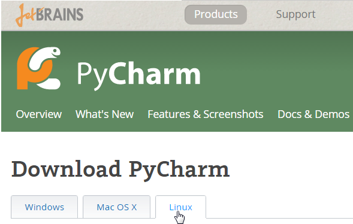
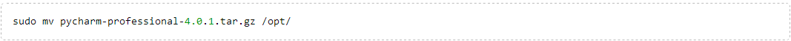
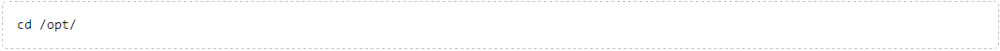
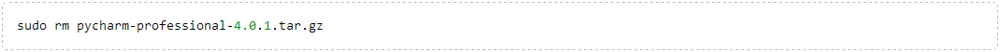
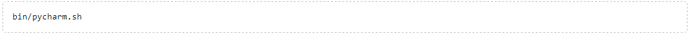

1、主题
如何在Linux上安装Pycharm，根据FHS。
2、平台要求
Intel Pentium III/800 MHz或更高。
内存最小512M，建议1G以上
屏幕最小分辨率1024x768
Oracle (Sun) JDK 1.6以及Open JDK 1.7或者更高版本
Python2.4或更高，Jython、PyPy 、IronPython
确认已经获得目标目录/opt的读写权限。
3、下载安装文件
现在Linux版本 Download PyCharm：

根据需要下载安装文件
或者
4、解压并安装
将安装文件拷贝或移动到安装目录/opt：

进入目录：

使用如下命令解压目标文件：
对应字母含义：
最后，移除下载的安装包：

安装完毕。
5、运行
安装完成后使用如下命令加载/opt/pycharm-<version number> 目录：

更为快捷的方法是为这个文件设置一个链接：
至此可以在Ubuntu主菜单中正常使用Pycharm了。